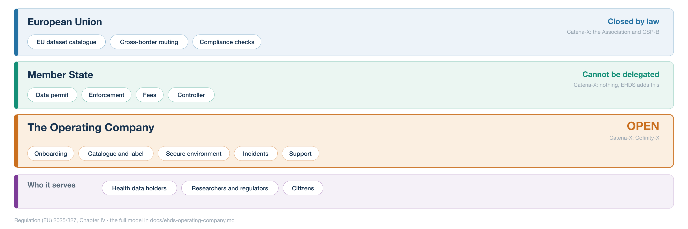

REUNIÓN DE PREPARACIÓN
A connected health system for the Basque Country: what we learned from Catena-X, and what it means for the EHDS
Answers to your eight questions, and a pilot
EJIE · Gobierno Vasco · October 2026
The short answers first. Each one has its own slide.
01
CHALLENGES
02
LESSONS
03
DECISIONS
04
ARCHITECTURE
05
MATURITY
06
GOVERNANCE
07
COSTS
08
TEAM
Reunión de preparación · Espacio de Datos EJIE · País Vasco
QUESTION 1 · CHALLENGES
What we met in Catena-X, and what it means for health.
Open source and open collaboration were new for most companies and institutions.
Working groups delivered only when top management gave its experts time and a mandate.
Agreeing what the data means took far more work than moving it.
In health this means FHIR, terminologies such as SNOMED CT and ICD-10, and OMOP.
Reunión de preparación · Espacio de Datos EJIE · País Vasco
QUESTION 2 · LESSONS
What we would do again, and what we recommend for the Basque Country.
Run open working groups on FHIR, SNOMED CT, ICD-10, OMOP and HealthDCAT-AP. Do not invent new standards.
Choose one or two use cases. Show value that you can measure.
Send improvements back to the open-source projects. Keep no private copies.
Write the tender around standards and conformity tests. This avoids vendor lock-in.
Reunión de preparación · Espacio de Datos EJIE · País Vasco
QUESTION 3 · DECISIONS
How we decided, and the five criteria behind every decision.
Working groups
propose
➜
The people who build it
decide the priorities
➜
A decision record
is published for everyone
FIVE CRITERIA FOR EVERY DECISION
Reunión de preparación · Espacio de Datos EJIE · País Vasco
QUESTION 4 · ARCHITECTURE
A service map with clear roles. The EHDS defines the roles, but not who runs them.

Implemented: the Catena-X operating model, with a service map and clear roles.
Considered: the EHDS role model alone. It has no answer for operations and onboarding.
Reunión de preparación · Espacio de Datos EJIE · País Vasco
QUESTION 5 · MATURITY
The components follow the service map. Health standards are mature; secure environments are not yet.
On its way to an ISO standard, ISO/IEC 26450.
Health standards used around the world.
In production since 2023, but still version 0.x. Breaking changes every quarter.
The least mature parts. Plan extra time and budget here.
Reunión de preparación · Espacio de Datos EJIE · País Vasco
QUESTION 6 · GOVERNANCE
Catena-X separates the rules, the code and the operation. We suggest the same here.
RULES · IN CATENA-X
Sets standards, runs certification.
CODE · IN CATENA-X
Hosts the open-source code.
OPERATION · IN CATENA-X
Runs the operation.
BASQUE COUNTRY
acts as the data access body.
BASQUE COUNTRY
used, and improved together.
BASQUE COUNTRY
runs the core services.
Reunión de preparación · Espacio de Datos EJIE · País Vasco
QUESTION 7 · COSTS
The core stack is open source. The money goes into engineering, hosting and operations.
CATENA-X, FOR REFERENCE
≈ €0
The core stack is open source.
> €100M
For a whole industry, not one region.
€1.5k – 71k
Paid to the operator.
BASQUE REGIONAL PILOT, OUR ESTIMATE
€0.8 – 1.5M
To build the pilot
Engineering and onboarding.
15 – 25% a year
To operate it
Of the build cost: about €120,000 – 375,000 a year.
€3,000 a month
Hosting: prod, test and dev
€1,000 per environment, €36,000 a year. Plus SDLC and developer tools.
Reunión de preparación · Espacio de Datos EJIE · País Vasco
QUESTION 8 · TEAM
Full-time people, with the right mix of skills.
8–12
full-time people
Experts need time and a mandate from top management. See question 1.
One person who holds the whole picture.
Run and update the dataspace connectors.
Hosting, identity, monitoring and security.
Makes the data mean the same thing everywhere.
GDPR, EHDS, data permits and contracts.
Reunión de preparación · Espacio de Datos EJIE · País Vasco
WHAT COULD COME NEXT
Small steps. Each one is useful on its own.
1
One or two, with a result you can measure.
2
The Health Data Office as access body, EJIE as operator.
3
With the hospitals, on existing standards.
4
Tendered on standards and conformity tests.
March 2027
Access bodies must be designated.
March 2029
Secondary use applies in full.
Regulation (EU) 2025/327, Art. 55(6) and 105
THE SUGGESTED PILOT · A REGIONAL EHDS NODE
Build one Basque node first. Then connect it to Spain, and through Spain to the EU.
STEP 1 · 2027 · BUILD
Basque Health Data Office
Data lake → FHIR and OMOP
One regional node
Secure processing environment
Two use cases
connect upwards
STEP 2 · 2028 · ALIGN
ENDS, the national data space
National access body
Ley de Salud Digital
MyHealth@EU (primary use)
connect upwards
STEP 3 · MAR 2029 · REUSE
HealthData@EU
EHDS implementing acts (2027)
EUDI Wallet and eIDAS 2
FOUNDATION · AVAILABLE TODAY · REUSE FROM DAY ONE
Eclipse EDC · Simpl-Open
HealthData@EU code
FHIR · OMOP · SNOMED CT
Cl@ve · FNMT · ENS
THE PILOT · STEP 1 OF 3 · 2027
Build with Osakidetza and EJIE, under the Basque Health Data Office.
Announced in January 2025. A model: Aragón opened Spain's first regional office, October 2025.
The data lake is Euskadi's part of the national ENDS: €1.35M of EU recovery funds, February 2025.
An Eclipse EDC connector and a HealthDCAT-AP catalogue, operated by EJIE.
A Basque environment, or the processing capacity of ENDS. Either way it must meet the ENS.
For example the hospital cancer registries that Osakidetza already runs.
Reunión de preparación · Espacio de Datos EJIE · País Vasco · status October 2026
THE PILOT · STEP 2 OF 3 · 2028
Align with the Ministry of Health and the Ministry for Digital Transformation (MTDFP).
Opened January 2026: a network of regional platforms on common protocols, with €28M for the regions. ENDS home
It must be designated by 26 March 2027. The Regulation allows several bodies with one coordinator: Art. 55(1).
Still a draft (public consultation from September 2025). It sets up the access bodies and both national and regional catalogues.
Primary use, and already live: the Basque Country is connected to the EU service since 2023. Proof that the path upwards works. MyHealth@EU
Reunión de preparación · Espacio de Datos EJIE · País Vasco · status October 2026
THE PILOT · STEP 3 OF 3 · MARCH 2029
Reuse what the European Commission builds. Most of the foundation is available today.
Connection due 26 March 2029, and 2031 for the remaining data categories. EHDS
Due earlier, by 26 March 2027: they shape what Step 1 builds. Regulation (EU) 2025/327
Every Member State must offer a wallet by the end of 2026. European Digital Identity
FOUNDATION · AVAILABLE TODAY · REUSE FROM DAY ONE
Open-source connector; Simpl-Open release of July 2026.
Open source on code.europa.eu since May 2025.
Reunión de preparación · Espacio de Datos EJIE · País Vasco · status October 2026
LET'S DISCUSS
Which one or two use cases would show value first?
Who will set the rules, and who will run the services?
Which hospitals would join the first working group?
Eskerrik asko · Gracias · Thank you
Live demonstration: ehds.mabu.red